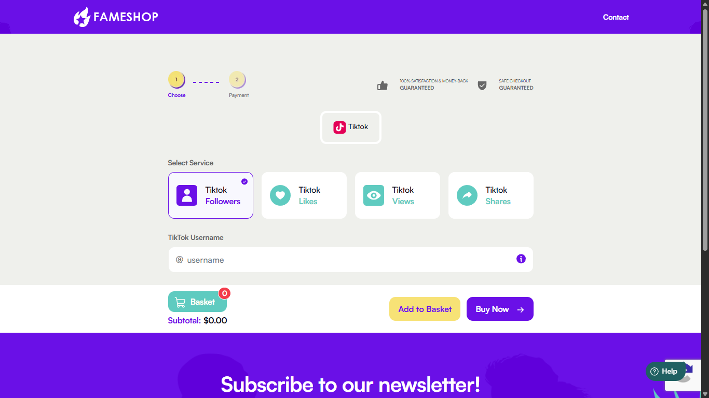
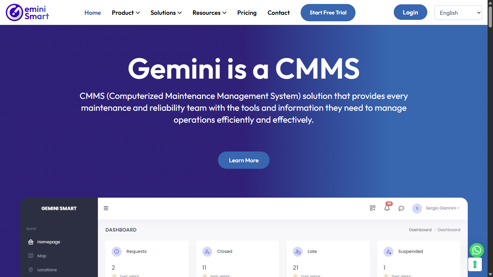
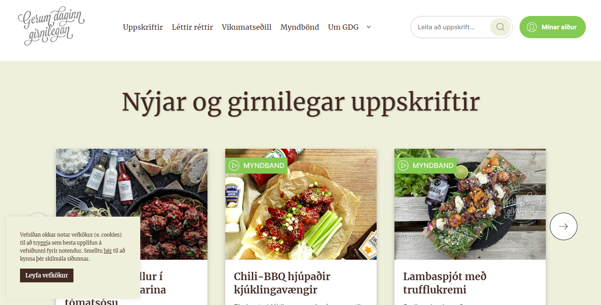

WordPress Developer.
& Technical Support Specialist
Around 8+ years of hands-on experience developing, troubleshooting, and maintaining high-performance WordPress & WooCommerce websites. Specializing in resolving complex plugin/theme conflicts, performance bottlenecks, security vulnerabilities, and custom API integrations.
Kaushik Kalathiya
Surat, Gujarat, India
8+ Yrs
WordPress Development
Technical
Support Specialist
MCA
Uka Tarsadia University
WP VIP
Learn Certified
Technical Capabilities
Comprehensive WordPress engineering, custom plugin development, performance tuning, and technical support.
Custom Theme Development
Pixel-perfect, performance-optimized custom themes built from scratch to match your specific design requirements.
ACF Integration
Expert-level ACF Flexible Content integration, providing clients with modular editing experiences.
Performance & SEO
Auditing and optimizing slow WordPress sites. Implementing caching, image compression, and Core Web Vitals fixes.
Custom Plugin Development
Creating custom plugins to extend WordPress functionality and meet specific client needs.
SCF Integration
Expert in Secure/Structured Custom Fields (SCF) for Flexible Content integration, providing clients with modular editing experiences.
Customization
Tailoring WordPress sites to meet specific client requirements and branding guidelines.
WooCommerce Development
Customizing checkout flows, product page layouts, payment gateways, and e-commerce store extensions.
Technical Support & Debugging
Diagnosing complex site issues, plugin/theme conflicts, security vulnerabilities, and server errors.
API & Webhook Integrations
Integrating third-party REST APIs, payment gateways, and external webhooks with custom WordPress hooks.
Selected Client Builds

FameShop TikTok Services Storefront
Custom WordPress and WooCommerce store with third-party API service delivery automation, payment gateway integrations, and streamlined checkout workflows.

Custom WordPress ThemeGemini CMMS Corporate SaaS Site
Responsive business website for a SaaS application with performance optimization, clean SEO structure, and dynamic content sections.

Recipe PlatformGerum Daginn Girnilegan Culinary Site
Structured recipe website with custom ingredient layouts, Recipe of the Week features, and PDF download functionality.
Frequently Asked Questions
Clear answers to common questions about WordPress development, WooCommerce engineering, and technical support.
I specialize in end-to-end WordPress and WooCommerce engineering. My primary services include custom theme development from scratch (pixel-perfect and zero bloat), custom plugin development, Advanced Custom Fields (ACF Pro) / Secure Custom Fields (SCF) flexible content architecture, WooCommerce checkout flows, third-party REST API and webhook integrations, Core Web Vitals speed optimization, and emergency troubleshooting for site errors (White Screen of Death, 500 errors, database crashes, and plugin conflicts).
With over 8 years of engineering experience including 3.5 years as Principal Software Engineer, I follow a systematic, non-destructive debugging methodology. I utilize PHP error logging, WP_DEBUG, query monitoring, and browser developer profiling in staging environments to isolate conflicting hooks, memory leaks, unoptimized SQL queries, or JavaScript namespace collisions. I resolve issues directly in custom child themes or site-specific plugins to ensure WordPress core updates remain smooth and trouble-free.
Yes. I have optimized multiple high-traffic WooCommerce stores by removing unnecessary cart fragmentation scripts on non-shop pages, optimizing MySQL transients and autoloaded options, configuring server-level object caching (Redis/Memcached), lazy loading media with modern formats, and minimizing render-blocking assets. This typically reduces Largest Contentful Paint (LCP) and Cumulative Layout Shift (CLS) to achieve passing Core Web Vitals scores.
I have built custom endpoints using the WordPress REST API
infrastructure (register_rest_route) with JWT/OAuth
authentication, custom sanitization, and permission callbacks.
In client projects like FameShop, I integrated automated
third-party fulfillment webhooks triggered directly by
WooCommerce order status changes to automate instant service
delivery.
I hold a Master of Computer Applications (MCA) in Computer Science & IT from Uka Tarsadia University (2015–2017) and a Bachelor of Computer Applications (BCA) from Veer Narmad South Gujarat University (2012–2015). My industry credentials include WordPress VIP Learn Certification, VTC Learn Advanced WordPress Debugging Certificate, and IIT Bombay PHP and Java certifications.
Need a Reliable WordPress Developer?
Whether you need a custom theme build, a WooCommerce plugin extension, or an ongoing technical partner, let's discuss your requirements.